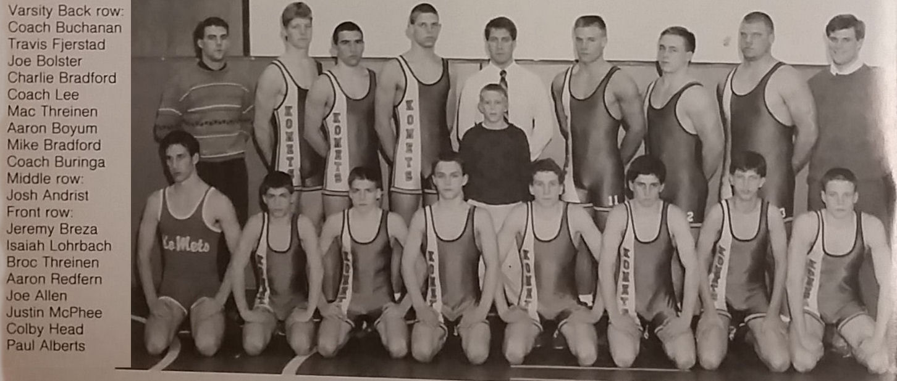

Season
1991-92
9-6Dual record
29Wrestlers
Mike BuringaHead coach

Roster
| Wt | Wrestler | Grade | Record | State |
|---|---|---|---|---|
| Dec. | 10th Zumbrota-Mazeppa | L | 31-24 | |
| Dec. | 12th Pine Island | W | 31-29 | |
| Jan. | 3rd Blooming Prairie | W | 48-25 | |
| Jan. | 7th St. Charles | W | 46-16 | |
| Jan. | 10th Austin Pacelli | W | 72-6 | |
| Jan. | 10th Byron | W | 51-18 | |
| Jan. | 17th Cannon Falls | W | 35-26 | |
| Jan. | 24th Harmony-Preston-Fountain | L | 34-32 | |
| Jan. | 24th Caledonia/Spring Grove | W | 37-24 | |
| Jan. | 28th Hayfield | L | 30-29 | |
| Jan. | 30th Stewartville | L | 41-17 | |
| Feb. | 6th Lake City | W | 31-28 | |
| Feb. | 11th Plainview-Elgin-Millville | L | 36-25 | |
| Feb. | ? Dover-Eyota | W | 29-23 | |
| Feb. | 26th Wabasha-Kellogg (Section Dual) | L | 40-21 | |
| 103# | Broc Threinen | 9th | 27-9 | |
| 112# | Isaiah Lohrbach | 10th | 20-9 | |
| 119# | Aaron Redfern | 9th | 11-20 | |
| 125# | Andy Head | 8th | 1-6 | |
| 130# | Justin McPhee | 10th | 11-20 | |
| 135# | Joe Allen | 9th | 14-13 | |
| 140# | Paul Alberts | 9th | 10-19 | |
| 145# | Jeremy Breza | 11th | 0-19 | |
| 152# | Joe Bolster | 11th | 18-14 | |
| 160# | Charlie Bradford | 10th | 21-9 | |
| 171# | Mac Threinen | 11th | 26-6 | |
| 189# | Jason Prigge | 11th | 4-9 | |
| 285# | Mike Bradford | 12th | 34-3 | |
| 189# | Aaron Boyum | 11th | 10-6 |
Team Results
9-6 · Click to expand
- Dec. 10thZumbrota-MazeppaL31-24
- Dec. 12thPine IslandW31-29
- Jan. 3rdBlooming PrairieW48-25
- Jan. 7thSt. CharlesW46-16
- Jan. 10thAustin PacelliW72-6
- Jan. 10thByronW51-18
- Jan. 17thCannon FallsW35-26
- Jan. 24thHarmony-Preston-FountainL34-32
- Jan. 24thCaledonia/Spring GroveW37-24
- Jan. 28thHayfieldL30-29
- Jan. 30thStewartvilleL41-17
- Feb. 6thLake CityW31-28
- Feb. 11thPlainview-Elgin-MillvilleL36-25
- Feb. ?Dover-EyotaW29-23
- Feb. 26thWabasha-Kellogg (Section Dual)L40-21
Head coachMike Buringa